The Third Reich did not lose the space race. It went underground.
Conspiracy night
Dramatis personae · Remember these faces
Six men. One rocket. One Moon.
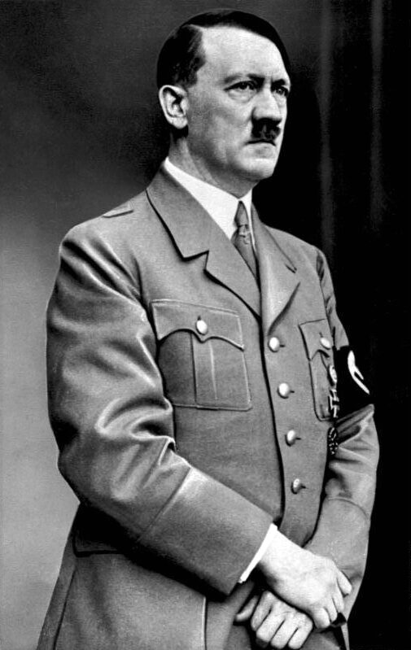
Adolf Hitler
Führer. Officially dead in Berlin, 30 April 1945. Body never shown.
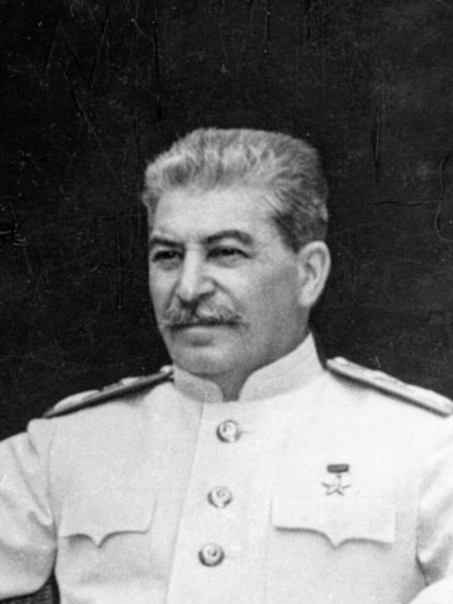
Joseph Stalin
Soviet leader. Took Berlin. Told Truman that Hitler was alive.
Walter Dornberger
Major-General. Ran the V-2 programme. Later: Bell Aircraft, USA.
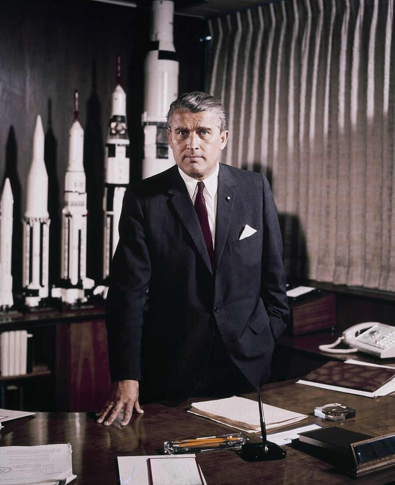
Wernher von Braun
SS-Sturmbannführer. Designed the V-2. Later: designed the Saturn V.
Kurt Debus
SS member. Launched V-2s. Later: launched every Apollo.
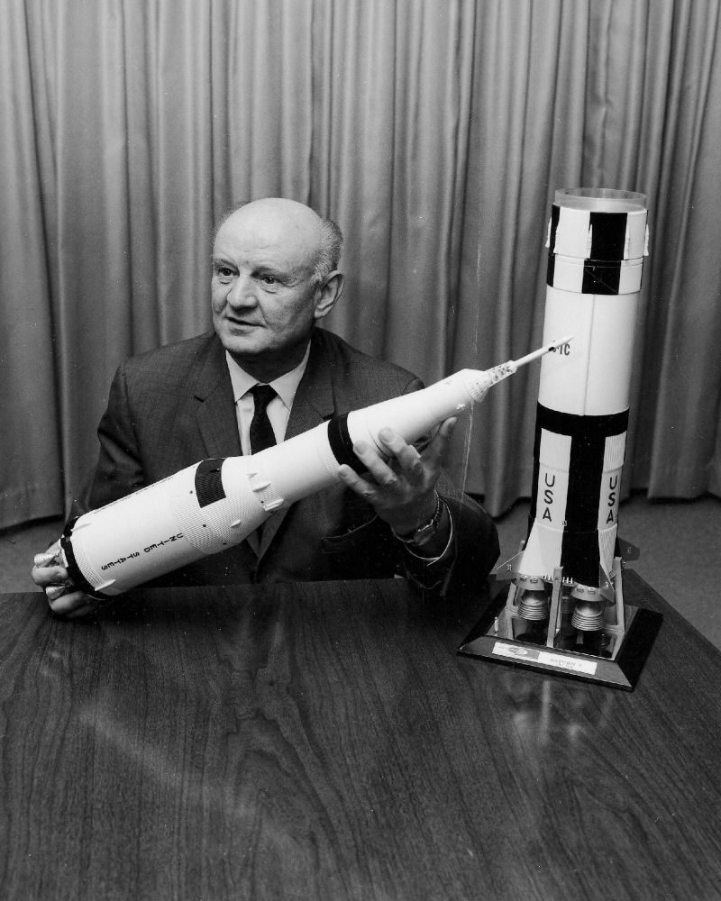
Arthur Rudolph
Mittelwerk operations director. Later: Saturn V project director.
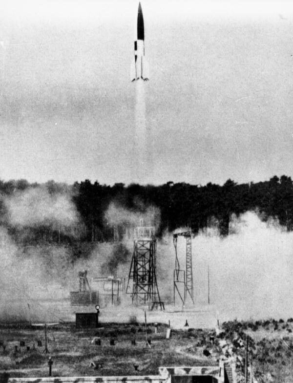
Peenemünde · 3 October 1942 · 84 years ago
The day a rocket touched the sky
Test flight A4-V4. Burn time 58 seconds. Range 190 km. Altitude:
0.0km
"This third day of October 1942 is the first of a new era in transportation: that of space travel."— Gen. Walter Dornberger, Peenemünde, that evening
Vergeltungswaffe 2 · 1943 — 1945
The weapon
0+
V-2s fired at London, Antwerp and Liège
~0
people killed by the rockets
0+
prisoners who died building them at Mittelwerk-Dora
The only weapon in history that killed more people in its making than in its use.
After the RAF bombed Peenemünde in August 1943, production moved into a mountain: the Kohnstein tunnels near Nordhausen. They built it underground. Remember that word.
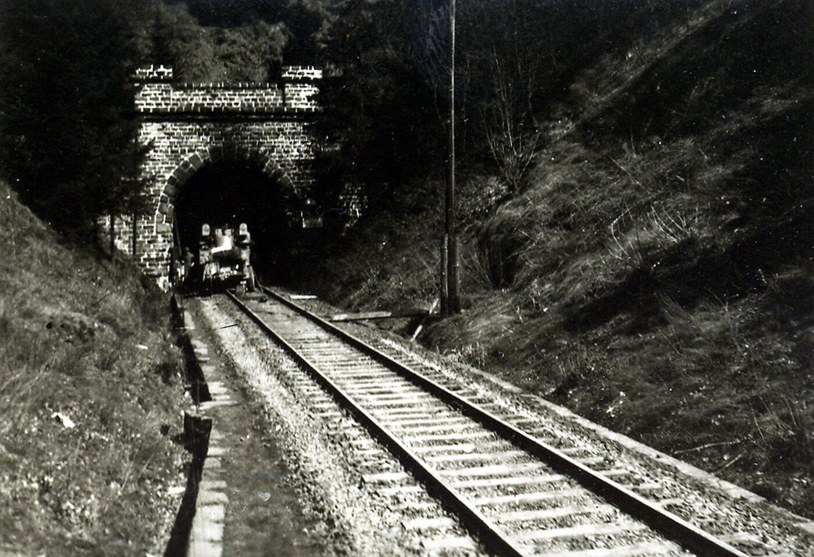
MITTELWERK TUNNELS · NORDHAUSEN · APRIL 1945
Berlin · 30 April 1945
Hitler vanishes
ADOLF HITLER · LAST SEEN 30 APRIL 1945 · FÜHRERBUNKER, BERLIN
INCOMING · TELEPRINTER · PRIORITY
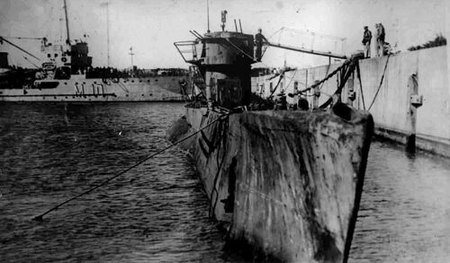
South Atlantic · Summer 1945
Two boats
U-530
Surrenders at Mar del Plata, Argentina, 10 July 1945. Two months after Germany. Commander Otto Wermuth has dumped the ship's log overboard. Asked why he came, he never gives an answer the Argentines accept.
U-977
Surrenders at Mar del Plata, 17 August 1945. Left Norway the day Berlin fell. 66 days underwater on snorkel without surfacing, the longest of the war. Cargo manifest: none.
Both captains are questioned by the Americans. The transcripts have never been released.
Moscow · State Archive of the Russian Federation · 2009
The skull
For sixty years the Soviets held the proof: a fragment of skull with a bullet hole, recovered from the Chancellery garden. In 2000 they put it on public display.
In 2009, archaeologist Nick Bellantoni of the University of Connecticut was allowed to take a sample. The DNA came back.
Female · age 20 – 40
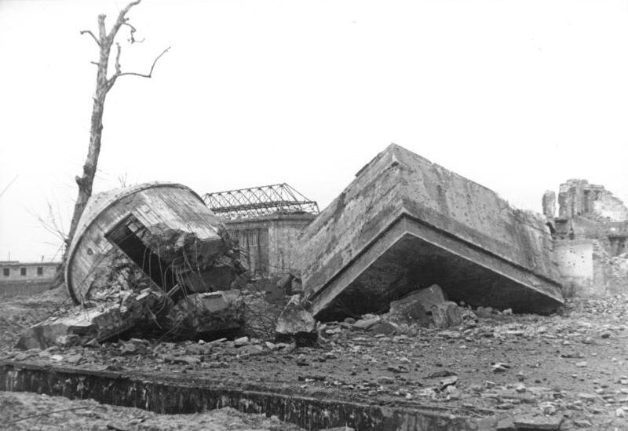
REICH CHANCELLERY GARDEN · THE BUNKER EXIT · 1947
1970 · Operation Archive
The KGB digs up the remains buried at its Magdeburg base, burns them, grinds the ash and tips it into the Biederitz river.
The one piece of evidence the world was ever shown is not Hitler. Everything else is in a river.
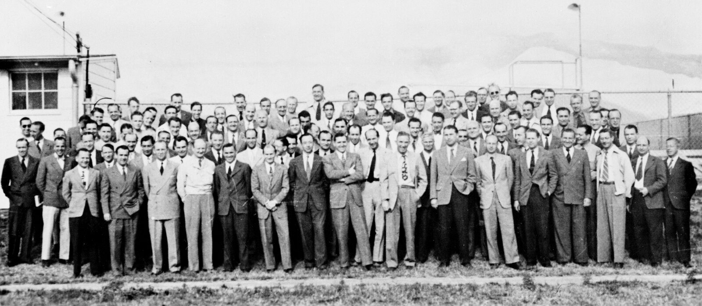
Operation Paperclip · 1945 — 1959 · 1,600 German scientists, one paperclip on each file
They didn't lose the space race. They ran it.
Wernher von Braun
SS-Sturmbannführer, V-2 technical director → Director, NASA Marshall Space Flight Center. Chief architect of the Saturn V.
Kurt Debus
SS member, V-2 launch engineer → First director, Kennedy Space Center. Launch director for every Apollo mission.
Arthur Rudolph
Operations director, Mittelwerk → Project director, Saturn V. In 1984 he gave up US citizenship and left rather than face a hearing on war crimes.
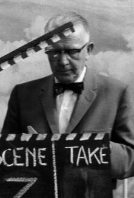
Hubertus Strughold
Luftwaffe aviation medicine → "Father of space medicine", US Air Force. His name was removed from the field's top award in 2013.
Fort Bliss, Texas · 1949
The novel
While waiting for the Army to find a use for him, von Braun wrote a science-fiction novel: Project Mars: A Technical Tale. It stayed unpublished until 2006.
In it, Mars is governed by a council of ten. Its elected leader carries a title.
ELON
The race · 1957 — 1972 · The Soviet problem
Every time they got close.
1957
Sputnik. First to orbit.
1959
Luna 3 photographs the far side. First.
1960
R-16 explodes on the pad. 90+ dead. Secret for 29 years.
1966
Korolev, chief designer, dies in routine surgery.
1967
Soyuz 1. Komarov's parachute fails. First death in flight.
1969
Apollo 11. Von Braun's rocket. Debus on the console.
1969–72
N1: four launches, four explosions. Erased.
First to orbit, first to the far side, first to put a man in space. Then, one by one, the people who could get them to the Moon died, and the rockets that could carry them exploded. Four N1s, four fireballs. Rockets don't fail like that on their own. Someone was shooting them down.
Apollo · 1969 — 1972
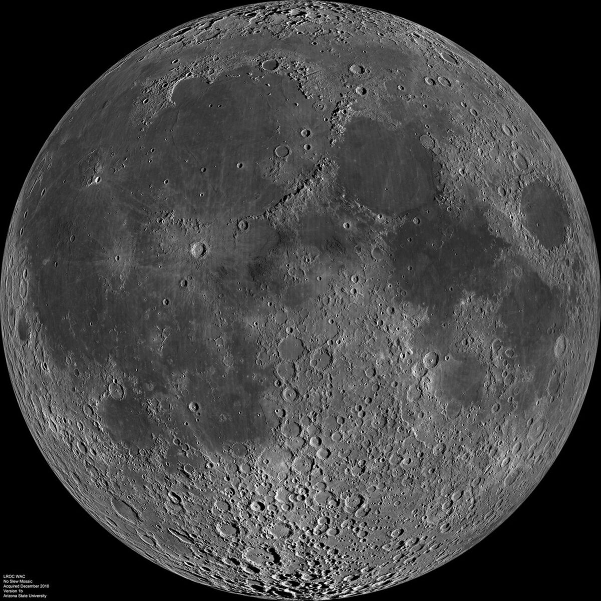
Apollo 11
12
14
15
16
17
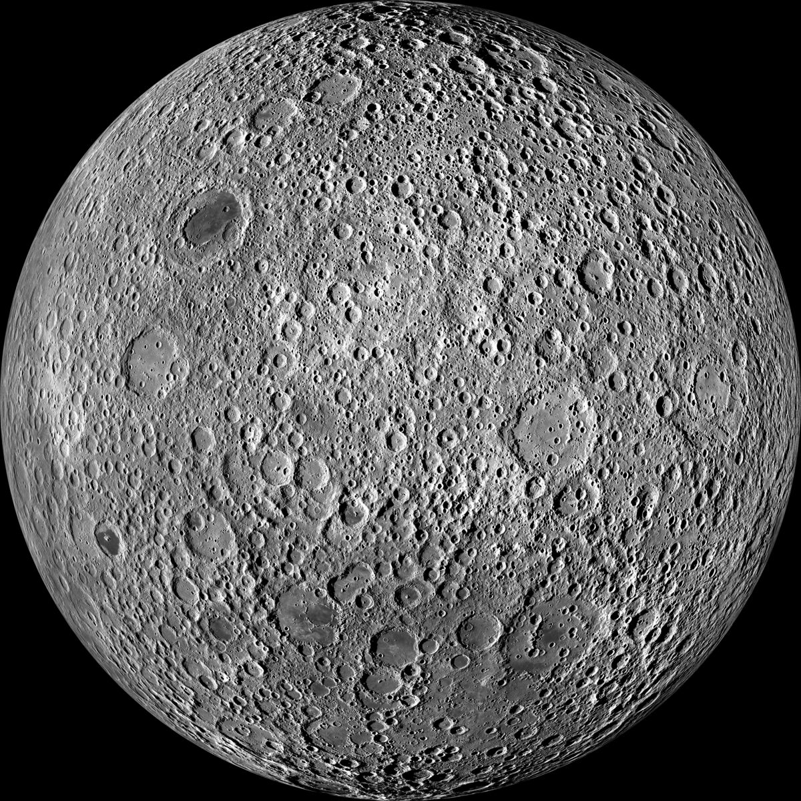
Far sideNo landings · 1969 – 2018
Six landings. One side.
Every Apollo landing was on the half of the Moon that faces Earth. Not one on the other half. The official reason: no radio line of sight.The men who chose the landing sites? See the previous slide.
PROJECT A119 · 1958 — US Air Force study to detonate a nuclear weapon on the Moon. The dust-cloud modelling was done by a graduate student named Carl Sagan.
PROJECT HORIZON · 1959 — US Army plan for a 12-man armed lunar outpost, operational by 1966. Status: "cancelled".
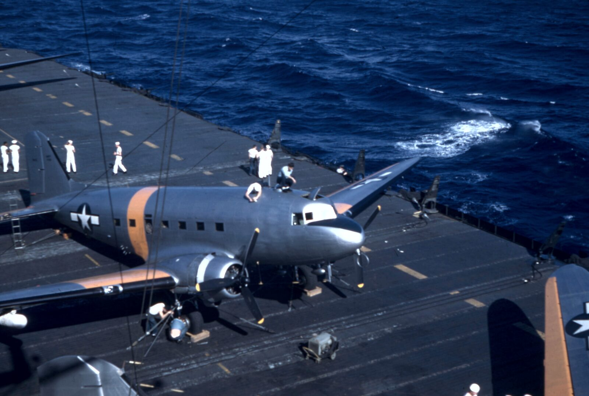
Where do you hide a Reich?
Underground
1943 · UNDER A MOUNTAIN
Nordhausen
The V-2 works move into the Kohnstein tunnels. Twenty kilometres of galleries, invisible from the air. The Allies only find it when they walk in.
1945 · UNDER THE SEA
Argentina
Two U-boats arrive months after the surrender, logs destroyed. Stalin tells Truman the man they are looking for is already there.
1939 – 1947 · UNDER THE ICE
Antarctica
In 1939 a German expedition claims a slice of the continent: Neuschwabenland. In December 1946 the US Navy sends 4,700 men, 13 ships and an aircraft carrier south under Admiral Byrd. Operation Highjump is planned for eight months. It comes home after two.
Under a mountain, under the sea, under the ice. And when there was nowhere left to go under, there was only one direction left. Up.
Taurus-Littrow · 14 December 1972
Then nobody went back
"We leave as we came and, God willing, as we shall return, with peace and hope for all mankind."— Eugene Cernan, last human on the Moon, climbing the ladder
APOLLO 17 · THE LAST FOOTPRINTS · DECEMBER 1972
0
days until anyone touched the far side.
3 January 2019. Chang'e 4 lands in the Von Kármán crater. First ever. Not American. Not Russian. Chinese. The radio problem? Solved with one relay satellite. One launch. Fifty years late.
Why fifty years? Because the far side was never off-limits to America. It was reserved.
Summary of findings
Pull the thread
1942
A rocket touches space. Dornberger calls it "transportation".
1945
Hitler "dies". Two U-boats reach Argentina. 1,600 engineers reach America.
1947
The US Navy sends a fleet to Antarctica. It comes home six months early.
1969
The Reich's engineers land six crews on the Moon. All on the side that faces us.
1972
Everyone stops. Fifty years of silence on the far side. The Soviets are stopped.
2019
A Chinese lander finally looks. Nobody from the race itself ever has.
The men who built Hitler's rocket built America's. They chose where it landed. And they kept it off the one place on the Moon that Earth can never see. Why would you do that, unless someone was already there?
Far side · Von Kármán crater · present day
They went underground. Then they went up.
The far side of the Moon is the only ground a person can stand on where Earth never rises. No radio from home reaches it. No telescope on Earth can see it. It is the perfect place to hide.
Which is exactly why astronomers want to build there. And exactly why someone already has.
OPERATION PAPERCLIP · THANK YOU · QUESTIONS, OR ACCUSATIONS
Debrief · amber = on the record · red = the claims
Lights up
On the record
3 Oct 1942 V-2 reaches 84.5 km; Dornberger's "new era" remark; 20 Jun 1944 flight to 176 km.
Mittelwerk-Dora was an underground factory and killed more people than the V-2 did.
Zhukov (9 Jun 1945) and Stalin (Potsdam) both floated Hitler's escape. The FBI's Hitler file is public.
U-530 and U-977 surrendered in Argentina; the 66-day snorkel run is documented.
2009 DNA test on the Moscow skull fragment: female. Operation Archive, 1970: real.
Von Braun, Debus, Rudolph, Strughold: every line on the cards. "Elon" is in the novel.
Neuschwabenland (1939) and Operation Highjump (1946–47, 4,700 men, cut short) are real.
Nedelin 1960, Korolev 1966, Komarov 1967, N1 ×4: all real. A119 and Horizon are declassified. Chang'e 4 landed 3 Jan 2019 with the Queqiao relay.
People claim
Hitler's death: the Soviets also held jaw fragments; a 2018 French forensic study of the teeth matched his dental records. Historians are not in doubt.
"Transcripts never released" and "cargo manifest: none": invented. Both captains were interrogated, released, and wrote memoirs.
"The far side was reserved" and "they chose where it landed": Apollo sites were picked by NASA site-selection boards for safe approach, lighting and science. The radio reason is the real one.
Antarctica: the 1939 expedition was about whaling and prestige; Highjump went home early because of the Antarctic winter. No base, no U-boats under the ice.
"Someone was shooting them down": a pad accident, a botched operation, a parachute, and a rocket with 30 engines and no test stand. Unrelated, and all Soviet-made.
"Nobody looked at the far side": Luna 3 photographed it in 1959, Apollo 8's crew saw it in 1968, orbiters have mapped every metre since. No landing until 2019 is true.
PHOTOS · BUNDESARCHIV (CC BY-SA 3.0 DE) · NASA · US ARMY · US NAVY · ARGENTINE NAVY · SEE assets/IMAGES.md